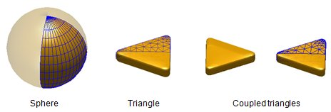
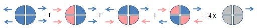

Mirror symmetry
Sometimes a problem under investigation exhibits mirror symmetry, i.e. the particle can be flipped at the x- or y-axis or both and becomes transformed into itself, and also the excitation preserves the symmetry. This is the case for plane wave excitation from above or below with normal incidence, or for arbitrary dipole orientations. In these cases BEM simulations exploiting mirror symmetry can be performed. The simulations can be significantly faster and use less memory, which might be beneficial for large or complex nanoparticles. On the other hand, BEM simulations with mirror symmetry are more complicated to set up and one should use them only if absolutely necessary.
In future releases we will not give strong precedence to the development of mirror symmetry.
Contents
Initialization
% indicate mirror symmetry in the option structure op = bemoptions( op, 'sym', sym ); % set up COMPARTICLEMIRROR object with mirror symmetry p = comparticlemirror( epstab, ptab, inout, closed, op, PropertyName, PropertyValue );
In the option structure the keyword
- sym='x' indicates that the particle can be flipped at the x-axis only,
- sym='y' indicates that the particle can be flipped at the y-axis only, and
- sym='xy' indicates that the particle can be flipped at both the x- and y-axis
without changing shape. The parameters in the comparticlemirror call are the same as those used for a comparticle initialization
- epstab={eps1,eps2,...} a table of dielectric functions,
- ptab={p1,p2,...} a table of discretized particle surfaces,
- inout=[in1,out1;in2,out2] an index array for the dielectric medium in- and out-side the particle surfaces (defined with respect to the outer surface normals),
- closed additional information whether the particle boundaries are open or closed surfaces, and
- op an option array that controls whether the particles boundaries are flat or curved and that defines the particle integration.
Particle boundaries
In the comparticlemirror initialization the boundaries must only be one half or quarter of the total boundary. The remainder of the particle boundary is obtained by applying symmetry operations.

In the above examples, the sphere and the coupled triangles exhibit xy-symmetry wheras the single triangle exhibits x-symmetry. The MNPBEM toolbox provides a number of means to create particle boundaries with mirror symmetry.
First, one can create a particle and then select only part of it. For spheres one can use the trispheresegment function
p = trispheresegment( linspace( 0, pi / 2, 10 ), linspace( 0, pi, 20 ), diameter );
For particles created through extrusion of polygons one can provide in the extrusion functions a symmetry keyword
p = tripolygon( poly, edge, op, 'sym', 'xy' );
that will automatically produce a boundary with the requested symmetry. Also the polygon3 class is written such that all methods can be used together with the sym keyword. In the above figure, the particles p of the comparticlemirror class are those indicated by the wire frames. The full particles, which are obtained through symmetry operations, can be obtained through
% full particle surface (COMPARTICLE object)
pfull = full( p );
BEM simulations
BEM simulations without and with mirror symmetry are very similar within the MNPBEM toolbox. They have been implemented for both quasistatic and retarded simulations, and for plane wave and dipole excitations. EELS simulations and layer structures are not implemented with mirror symmetry.
% set up BEM solver bem = bemsolver( p, op ); % set up plane wave excitation and dipole excitation exc = planewave( pol, dir, op ); dip = dipole( pt, op ); % compute surface charges sig1 = bem \ exc( p, enei ); sig2 = bem \ dip( p, enei ); % compute scattering and extinction cross section sca = exc.sca( sig1 ); ext = exc.ext( sig1 ); % compute total and radiative scattering rate [ tot, rad ] = dip.decayrate( sig2 );
If one wants to obtain the surface charges for the full particle or the electromagnetic fields or potentials at the particle boundary, one should call
% get surface charge distribution of full particle sigfull = full( sig ); % get electromagnetic fields and potentials of full particle f = full( field( bem, sig ) ); pot = full( potential( bem, sig ) );
Tips and tricks
The philosophy behind simulations with mirror symmetry is
- to perform the BEM simulations using mirror symmetry and
- to use the surface charges sig for the calculation of scattering cross sections, decay rates, or the electromagnetic fields and potentials at the particle boundaries.
- For any other type of post-processing, one should expand the compstructmirror objects immediately after the BEM solver calls to full size using the full() command.
Working principle
The BEM solvers exploiting mirror symmetry require external excitations with well-defined parities. Examples are light polarizations along x and y, or the combination of dipoles depicted in the figure below. If interested in other light polarizations, one can take the fundamental solutions for x- and y-polarization and form a linear superposition. In a similar fashion, one can exploit the linearity of Maxwell's equations and add the different dipole orientations to obtain the configuration where a single dipole is located in the first quadrant.

The excitation classes with mirror symmetry work such that they
- first store the requested light polarizations or dipole orientations,
- perform BEM simulations with the solvers including mirror symmetry for the excitations with well-defined parities (i.e. light-polarizations along x or y, or dipole configurations depicted in the above figure), and
- finally form a linear superposition of these BEM simulations to obtain the results for the requested input.
Because of this procedure, it is important that the surface charges (as well as fields or potentials computed at the particle boundary) are expanded to full size at the end of the simulation.
Examples
A number of examples for BEM simulations with mirror symmetry can be found in the demo files section.
Copyright 2017 Ulrich Hohenester